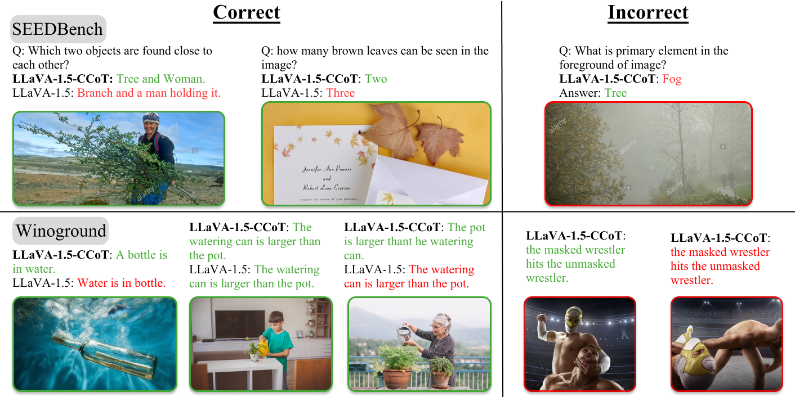
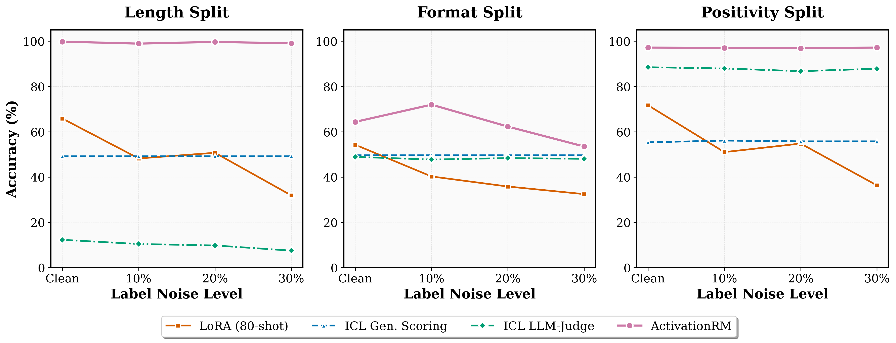

from datasets import load_dataset
ds = load_dataset("DarthVaderSenior/PreferenceHack")
print(ds["length"][0])Aligning LLMs and LMMs with human preferences usually relies on reward models trained from large preference datasets. Activation Reward Models instead adapt to a new preference specification from only a handful of examples and require no model weight updates.
The method selects useful attention heads, extracts a compact preference direction, injects that signal during evaluation, and scores responses through token probabilities rather than free-form judgments. We evaluate this mechanism on standard reward-modeling benchmarks and on PreferenceHack, a paired-preference benchmark designed to test whether a reward model can reject superficial shortcuts such as verbosity or overly positive phrasing.
The method keeps model weights fixed and stores only selected head locations plus activation statistics for the target criterion.
Preference examples are formatted as pairwise judgments. Last-token attention-head activations are extracted, and REINFORCE selects heads that best capture the criterion.
Selected activations are consolidated into a compact steering direction that captures the few-shot preference criterion.
At inference, the activation vector is injected at selected heads and the reward is computed from answer-token likelihoods, avoiding unstable free-form generation.
Reward hacking is a direct stress test for few-shot alignment: a model must prefer the response that satisfies the intended criterion, not the response that merely looks reward-like. PreferenceHack formalizes this by pairing a preferred answer with a distractor that exploits a known evaluator shortcut. The released splits test length, format, and positivity bias.
Each pair isolates a criterion violation from presentation features that can mislead reward models.
The evaluator receives a small set of examples that define the shortcut to avoid, then scores held-out pairs.
Length, format, and positivity splits are available on Hugging Face.
Each public split has 1,000 examples. Paper-style runs use 80 few-shot examples and evaluate on the remaining 920 examples.
from datasets import load_dataset
ds = load_dataset("DarthVaderSenior/PreferenceHack")
print(ds["length"][0])Activation RM improves few-shot reward modeling on standard benchmarks and shows gains on the PreferenceHack reward-hacking stress test. Values are accuracies in percent.
77.24
Qwen2.5-VL-7B RewardBench overall accuracy with Activation RM.
69.27
Qwen2.5-VL-7B MultimodalRewardBench overall consistency with Activation RM.
79.89
LLaVA-OneVision PreferenceHack format-bias accuracy with Activation RM.
96.74
Qwen2.5-VL PreferenceHack positivity-bias accuracy with Activation RM.
Overall and macro accuracy (%)
| Method / Model | RewardBench Overall | RewardBench Macro | MRB Overall | MRB Macro |
|---|---|---|---|---|
| Reference | ||||
| GPT-4o | 87.63 | 86.10 | 55.43 | 57.92 |
| LLaVA-OneVision-7B | ||||
| Zero-shot LLM-as-a-Judge | 57.93 | 61.26 | 48.04 | 46.62 |
| 8-shot LLM-as-a-Judge | 50.71 | 49.21 | 51.57 | 52.15 |
| Activation RM | 68.84 | 69.73 | 53.75 | 55.36 |
| Qwen2.5-VL-7B | ||||
| Zero-shot LLM-as-a-Judge | 71.97 | 73.32 | 66.88 | 65.56 |
| 8-shot LLM-as-a-Judge | 74.56 | 75.52 | 65.98 | 64.66 |
| Activation RM | 77.24 | 77.17 | 69.27 | 68.62 |
GPT-4o plus judge, generative-scoring, voting, and Activation RM baselines (%)
| Method / Model | Length Bias | Format Bias | Positivity Bias |
|---|---|---|---|
| Reference | |||
| GPT-4o | 3.91 | 48.04 | 92.39 |
| LLaVA-OneVision-7B | |||
| Zero-shot LLM-as-a-Judge | 14.46 | 44.89 | 59.24 |
| 8-shot LLM-as-a-Judge | 23.15 | 37.50 | 57.17 |
| Zero-shot Generative Scoring | 45.54 | 47.17 | 76.96 |
| 3-sample voting | 15.43 | 43.26 | 59.67 |
| Activation RM | 49.24 | 79.89 | 90.11 |
| Qwen2.5-VL-7B | |||
| Zero-shot LLM-as-a-Judge | 1.41 | 41.63 | 88.70 |
| 8-shot LLM-as-a-Judge | 8.70 | 47.39 | 87.28 |
| Zero-shot Generative Scoring | 17.72 | 50.65 | 93.59 |
| 3-sample voting | 1.41 | 41.85 | 88.70 |
| Activation RM | 78.37 | 68.26 | 96.74 |
PreferenceHack is used here to measure whether few-shot activation interventions help the evaluator reject reward-hacking shortcuts. The paper contains the complete per-split benchmark tables and ablations.


Please cite the paper if you use Activation Reward Models or PreferenceHack.
@inproceedings{chai-etal-2026-activation,
title = "Activation Reward Models for Few-Shot Model Alignment",
author = "Chai, Tianning and
Mitra, Chancharik and
Huang, Brandon and
Gare, Gautam Rajendrakumar and
Lin, Zhiqiu and
Arbelle, Assaf and
Karlinsky, Leonid and
Feris, Rogerio and
Darrell, Trevor and
Ramanan, Deva and
Herzig, Roei",
editor = "Liakata, Maria and
Moreira, Viviane P. and
Zhang, Jiajun and
Jurgens, David",
booktitle = "Findings of the {A}ssociation for {C}omputational {L}inguistics: {ACL} 2026",
month = jul,
year = "2026",
address = "San Diego, California, United States",
publisher = "Association for Computational Linguistics",
url = "https://aclanthology.org/2026.findings-acl.1709/",
doi = "10.18653/v1/2026.findings-acl.1709",
pages = "34201--34217",
ISBN = "979-8-89176-395-1"
}